Allez, il est temps de passez l'action. Allons-y, tous ensemble, KATTOBINGU
Yugioh: The Power of Four
Ruri était fatiguée de courir. Cela faisait presque une heure qu'elle était en fuite, essayant d'échapper à l'étranger masqué qui la poursuivait. Elle s'occupait de ses
affaires, aidant la Résistance, quand soudain un froid glacial lui parcourut l'échine. Ruri s'est instinctivement retournée pour voir une silhouette déguisée. Bien
qu'elle ne pouvait pas voir son visage, elle pouvait voir son sourire... un sourire froid et sadique qui lui disait de s'éloigner de lui.
Malheureusement, personne d'autre n'était présent lorsque l'inconnu a commencé à la poursuivre. Même son frère aîné, Shun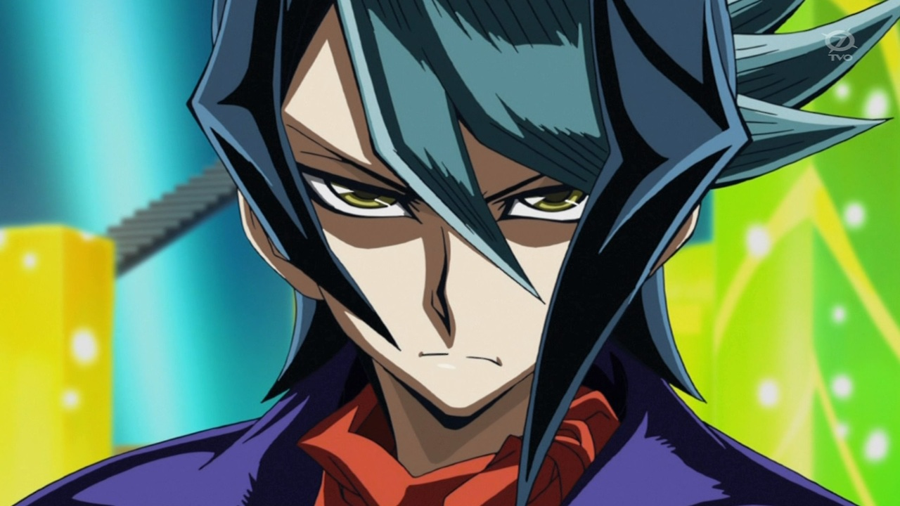,
et son ami proche, Yuto, n'étaient pas là pour
l'aider. Elle était complètement seule. C'était comme si cette personne savait quand agir, quand elle était la plus vulnérable... quand personne ne pouvait l'aider.
Elle continua à courir toute la nuit dans les ruines de Heartland. Mais peu importe où elle se tournait ou à quelle vitesse elle se déplaçait, la silhouette était
toujours non loin derrière elle. Désespérée, Ruri s'est dirigée vers une ruelle sombre, espérant l'y perdre. A son grand désarroi, cela menait à une impasse. Elle était
piégée. Ruri s'est retournée pour voir son poursuivant masqué se tenir devant elle.
Yuri: Et bien ? Tu aimes jouer à cache-cache ? Ne compliques pas tant les choses.
L'étranger le disait d'une manière ludique.
La jeune fille savait qu'elle n'avait plus qu'un seul choix : Se battre. Lorsqu'elle a enfilé son Duel Disk, l'étranger semblait s'amuser de la situation.
Yuri: Tu veux te battre, c'est ça ? Quelle tête de mule ! Très bien, allons-y ! Si je te bats en Duel, tu devras écouter ce que j'ai à te dire. D'accord ?
Ruri se tenait devant ce psychopathe, le regardant d'un air de défi. Elle en avait assez. Elle aussi, était membre de la Résistance, le groupe ayant survécu à l'Invasion, qui
voulait survivre et se battre contre ceux qui avaient détruit leur maison et tant de leurs proches. Si elle devait tomber, elle tomberait en se battant corps et âme, jusqu'à la toute fin.
L'étranger a fait un geste pour activer son propre Disque de Duel. Cependant, il n'a jamais pu le faire, car à ce moment-là...
???: KATTOBINGU !
Yuri: Qu'est-ce que... !?
L'inconnu a levé les yeux juste à temps pour voir quelque chose de gros tomber juste au-dessus de lui. Sa vision s'est alors assombrie et il a commencé à avoir du mal à
respirer. Quelqu'un lui avait sauté dessus et avait utilisé sa propre cape pour le désorienter.
Ruri est restée là, stupéfaite et confuse. Devant ses yeux, un jeune garçon s'est attaqué à l'homme qui essayait de la capturer. Il a eu beau essayer, il n'a pas pu se
débarrasser du gamin. Le garçon, quant à lui, semblait s'amuser en tourmentant sa victime.
???: Qu'est-ce qu'il y a, tu ne peut pas respirer là-dessous ? Tu ne vois pas ? Bien ! C'est comme ça que j'aime mes méchants, impuissants et totalement pris avec leur pantalon baissé !
(nDc: Un petit lien pour comprendre cette expression)
Le garçon a ensuite attaché la cape avec tout un tas de nœuds compliqués et a envoyé la silhouette dans un tas de débris. Le garçon avait l'air très content de lui et s'est tourné
vers Ruri.
???: Tu vas bien ?
Ruri a pris un moment pour retrouver son calme avant de répondre.
Ruri: Hum... oui. Je vais bien. Merci. Qui es-tu ?
Le garçon souriait toujours, avec un éclat lumineux.
Chapitre 1: Une lueur d'espoir dans ce monde en ruine. Cet espoir se nomme: Yuma Tsukumo.
Yuma: Je m'appelle Yuma Tsukumo, et je suis venu pour t'aider, et te sortir d'ici... et loin de lui.
Yuma a dit, en désignant avec le pouce de son autre main le gars qui essayait encore d'enlever sa cape nouée sur lui.
Yuma: Alors, tu es prête à courir, Ruri ?
La fille haleta.
Ruri: Comment connais-tu mon nom ?
Elle a demandé, stupéfaite que ce garçon, Yuma connaisse son nom. Elle était sûre de ne l'avoir jamais rencontré auparavant. C'était la deuxième fois qu'un étranger
l'approchait ce soir. Cette fois, cependant, elle pouvait dire que ce garçon ne lui voulait aucun mal. Il vient juste de risqué sa vie pour sauver la sienne après tout.
Yuma: A vrai dire, j'en connais bien plus que tu ne peux l'imaginer, mais on peut en parler plus tard. Tu viens ou pas ?
Yuma a demandé en lui tendant la main. Ruri a regardé sa main, puis est revenue vers Yuma. Tout comme son instinct lui disait de fuir l'homme en cape, il lui
disait d'aller avec cet étrange garçon. Souriante, elle acquiesça la tête en prenant la main de Yuma et ensemble, ils ont couru hors de la ruelle.
Ruri: Où allons-nous ? La Résistance n'est pas là-bas, c'est dans l'autre direction.
Ruri disait, remarquant qu'ils couraient dans la direction complètement opposée à celle où se trouvaient ses camarades.
Yuma: Nous n'allons pas vers le camp de la Résistance. Nous nous dirigeons vers la Tour d'Heartland. Yuma a répondu, surprenant encore plus Ruri.
Ruri: Pourquoi la Tour d'Heartland ? Ce n'est pas sûr là-bas.
Elle a noté. Alors qu'ils couraient, Yuma l'a regardée par-dessus son épaule. Il semblait beaucoup plus sérieux maintenant.
Yuma: Ecoute Ruri, Academia est après toi. Le type que je viens d'éliminer a reçu l'ordre de t'y emmener comme prisonnière. Tu n'es pas en sécurité ici. Il faut que
je t'emmène loin d'ici aussi vite que possible.
Ruri en perdit son souffle.
Ruri: Academia en a après moi ! Pourquoi !?
Elle ne comprenait pas de quoi il s'agissait. Depuis qu'Academia a commencé son attaque, ils n'ont montré aucune hésitation à sceller tout le monde dans des cartes,
qu'il s'agisse de Duellistes ou de citoyens non armés qui ne font pas de duels du tout. Pourquoi Ruri serait-elle une exception ?
Yuma: Je t'expliquerai une fois que nous serons en sécurité, à une distance raisonnable et très sûre d'ici.
Yuma a répondu alors qu'ils continuaient à courir. Soudainement, Ruri a retiré sa main de l'emprise de Yuma et les deux ont arrêté de courir.
Yuma: Ruri ? Pourquoi t'est tu arrêté ? Nous devons nous dépêcher si nous voulons nous enfuir ! Yuma a insisté. Ruri, de son côté, le regardait fixement.
Ruri: Dis-moi pourquoi aller à la Tour d'Heartland nous aidera à nous échapper. Et d'ailleurs, où est-ce qu'on s'échappera au juste ?
Demanda Ruri. Ce garçon lui disait qu'elle devait quitter sa maison, et tous les gens qu'elle connaissait. Tout ça parce qu'elle avait une grosse cible dans son dos ?
Elle avait le droit de savoir avant de faire quelque chose d'irréfléchi. Yuma a soupiré en lui disant.
Yuma: J'ai un... vaisseau qui peut nous emmener loin d'ici et vite ! Mais tu vois, ce vaisseau est énorme, et il ne peut pas se poser dans un endroit étroit comme celui-ci.
Il est préférable de se diriger vers un endroit en hauteur, où nous pourrons l'atteindre sans problème...
Ruri: Un endroit... comme la Tour d'Heartland. Répondit Ruri, alors que Yuma acquiesça.
Yuma: En effet. Une fois que nous aurons atteint le sommet de la tour, je pourrai le contacter pour qu'il vienne nous chercher. Quant à savoir où nous allons...
c'est un peu plus compliqué à expliquer.
Il le disait d'un ton hésitant. Cela rendit Ruri encore plus confuse.
Ruri: Pourquoi ça ? Elle a demandé. Yuma eu un air perplexe, se demandant comment il devait répondre à cette question.
Astral: Yuma, nous n'avons pas le temps pour ça. Nous devons bouger maintenant ! Astral insista. Yuma grogna.
Yuma: Je sais, mais je ne sais pas quoi lui dire sur l'endroit où nous l'emmenons ! Dis-moi ce que je dois dire pour convaincre Ruri de venir avec nous !
Il a répondu en criant. Ruri semblait de plus en plus confuse.
Ruri: Avec qui Yuma parle-t-il ? Il n'y a personne d'autre ici. Il n'a pas non plus l'air d'utiliser un quelconque appareil de communication aussi.
Ruri ne savait pas quoi faire de tout ça.
Astral: Dis-lui simplement que c'est un endroit similaire à ce qu'était sa maison avant l'invasion. C'est un endroit beaucoup plus sûr où Academia n'aura aucune chance
de la trouver.
A suggéré Astral. En acquiesçant la tête, Yuma s'est retourné vers Ruri et lui a répété les mots d'Astral.
Après un moment d'hésitation, elle a semblé l'accepter. Elle détestait devoir quitter sa maison, même si elle n'était plus qu'un fantôme d'elle-même. Elle détestait surtout
laisser son frère et ses amis derrière elle. Shun, Yuto, Sayaka, Allen, Kaito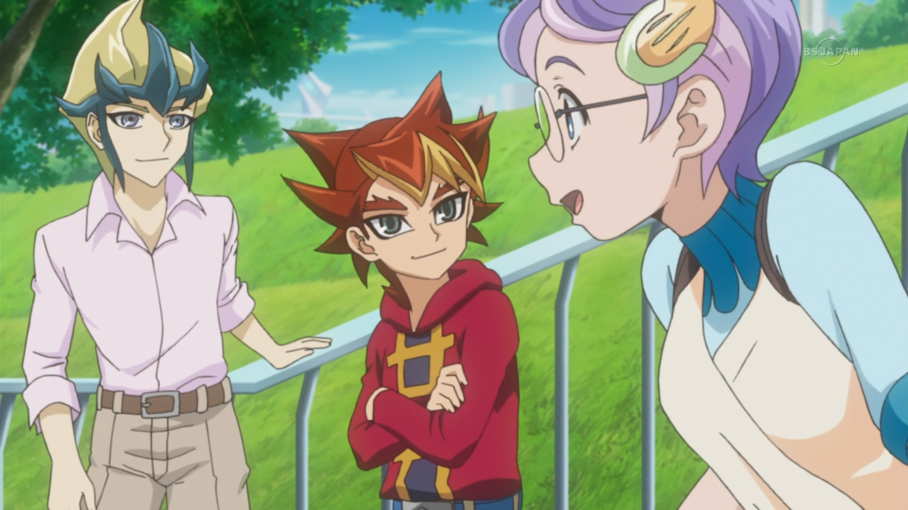
... elle s'enfuirait vers on ne sait où, sans aucun d'entre eux. D'un autre côté, ils voudraient qu'elle soit protégée. Si Academia était après elle pour un plan
diabolique, ils feraient ce qu'ils pourraient pour assurer sa sécurité. De plus, elle ne pensait pas que cela serait permanent. Elle était sûre qu'un jour, elle
reviendrait pour se battre et gagner la guerre. En attendant ce jour, ses camarades voulaient qu'elle reste hors de portée de l'ennemi.
Ruri: Ok, je te fais confiance. Allons-y. Soupirant de soulagement, Yuma la remercia alors qu'ils reprenaient leur course vers leur destination.
Pendant ce temps, Yuto et Shun cherchaient frénétiquement Ruri. Elle avait disparu depuis plus d'une heure et personne ne semblait l'avoir vue. Ils étaient de plus en plus
inquiets. Shun en particulier, puisqu'il s'inquiétait pour sa jeune soeur.
Jusqu'à présent, ils n'avaient trouvé aucune trace de la fille aux cheveux noirs. De plus en plus frustré, Shun a frappé un mur à proximité.
Shun: Merde ! Aucun signe de Ruri nulle part ! Ce n'est pas son genre de disparaître comme ça ! Où diable peut-elle bien être !?
Yuto partageait sa colère et son inquiétude. Il espérait au plus haut point que Ruri allait bien, quelque part.
Yuto: Shun, nous n'abandonnerons pas. Nous la trouverons. Je suis sûr que nous y arriverons.
Dit Yuto en tenant l'épaule de son ami. Shun commençait à grincer des dents d'impatience, mais il savait que Yuto avait raison. Ils ne cesseraient jamais de chercher
tant qu'ils ne l'auraient pas trouvée. Il soupira en essayant de se calmer.
Shun: Je l'espère, Yuto. Je l'espère vraiment..
Ils étaient sur le point de continuer leurs recherches lorsque une voix les interrompits.
???: Yuto! Shun! Le duo s'est retourné pour voir une jeune fille portant des lunettes courir vers eux.
Yuto: Sayaka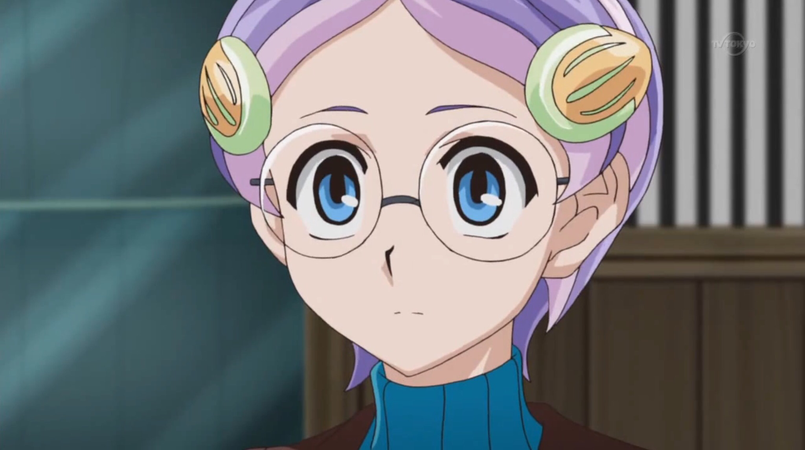! Qu'est-ce que tu fais ici ? Tu devais retourné avec les autres.
Dit Yuto, inquiète qu'elle ait quitté leur base toute seule comme ça.
Sayaka: Écoutez-moi ! Je… je viens de voir Ruri ! Il n'y a pas si longtemps ! Je sais où elle est !
Surpris par cela, Shun l'attrapa instantanément par les épaules, la regardant fixement dans les yeux.
Shun: Tu as vu Ruri ! Où ? Où est-elle allée !? L'aîné Kurosaki faillit crier. Cela effraya la jeune fille.
Yuto: Sayaka, s'il te plaît, dis-nous où se trouve Ruri.
Yuto le disait beaucoup plus calmement, même s'il semblait toujours impatient. Sayaka hocha la tête après avoir entendu sa voix un peu plus calme.
Sayaka: Je me cachais à proximité à ce moment-là. Je l'ai vue être poursuivie dans une ruelle par un type portant une cape. Je ne pouvais pas voir son visage.
Qui qu'il soit, il n'était pas amical. Ils étaient sur le point de se battre quand un garçon de mon âge lui a atterit dessus. Il a ensuite aidé Ruri à lui échapper.
Je les ai suivis pendant un moment et j'ai entendu le garçon dire qu'ils allaient à la Tour d'Heartland. Après cela, j'ai décidé de venir vous trouver.
Les jeunes hommes étaient stupéfaits par cette histoire.
Yuto: La Tour d'Heartland ? Pourquoi se rendre là-bas ? Yuto s'est demandé.
Shun: Et qui est ce garçon qui était avec elle ? Demanda Shun, semblant plus surpris qu'en colère.
Sayaka: Il a dit que son nom était Yuma Tsukumo, et il disait quelque chose à propos d'emmener Ruri aussi loin que possible d'ici. Je pense...
Sayaka hésitait une seconde avant de poursuivre.
Sayaka: Je pense qu'ils prévoient tous les deux de quitter Heartland. Elle termina d'un ton craintif. Cela a définitivement choqué le duo.
Shun: Quitter Heartland !? Avec un garçon étranger !? Je ne le laisserais pas faire ! Pas de mon vivant ! Shun hurla en courant immédiatement en direction de la Tour d'Heartland.
Yuto: Shun, attends !
Yuto l'a appelé, mais son allié n'a pas répondu et a continué à courir. Il soupira, sachant que rien n'arrêterait Shun quand il s'agissait de sa sœur. Il se tourna alors
vers Sayaka.
Yuto: Écoute, Sayaka. Retourne à la Résistance et reste-y. Ne dis qu'à ceux en qui nous avons confiance ce qui s'est passé. Shun et moi ramènerons Ruri. Tu as compris ?
Sayaka acquiesca une fois de plus.
Sayaka: S'il te plaît, Yuto. Je t'en supplit, ramène Ruri à la maison.
Elle le disait, alors qu'elle commença à pleurer. Yuto lui a alors tapoté la tête et lui a fait un sourire encourageant.
Yuto: Je te le promets.
Après cela, il se retourna et courut après Shun. Sayaka fixa dans leur direction pendant un long moment avant de finalement retourner vers la Résistance.
Après un certain temps, Yuma et Ruri ont finalement atteint la Tour d'Heartland. Le garçon détestait voir l'un de ses bâtiments préférés de chez lui dans un tel état.
Mais il savait que c'était leur seule chance de s'échapper.
Ruri: On a réussi.
Ruri le disait, croyant difficilement qu'ils étaient arrivés sans rencontrer d'autres soldats d'Academia.
Yuma: Oui, mais nous ne sommes pas encore sortis de l'auberge. Nous devons encore atteindre le sommet. Yuma répondit.
???: Désolé, mais je ne peux pas vous permettre de partir comme ça.
Yuma et Ruri ont été surpris de voir quelqu'un sortir de la Tour d'Heartland. Un grand jeune homme aux cheveux orange sauvages est apparu et s'est tenu devant eux.
C'était quelqu'un que le couple a reconnu.
Yuma: Dennis McField !
Yuma a crié de colère. Dennis a légèrement écarquillé les yeux.
Dennis: Oh ? Alors comme ça, tu me connais ? Eh bien, je ne suis pas surpris. Je suis assez célèbre pour mes numéros de divertissement par ici. Par contre, je ne crois pas
t'avoir déjà rencontré. Et tu est ?
Yuma grogna.
Yuma: C'est Yuma !
Il n'arrivait pas à croire qu'il était si près de s'échapper avec Ruri, et voilà que Dennis s'est pointé pour leur barrer la route.
Ruri: Comment as-tu su où nous serions ? Et pourquoi ne nous laisses-tu pas partir ?
Ruri a demandé, ne s'attendant pas à tomber sur l'artiste contre lequel elle s'est battue.
Dennis: Je n'étais pas très loin quand j'ai appris que tu t'étais échappé de Yuri. Je vous ai vu vous diriger dans cette direction, alors j'ai décidé de vous
rattrapé, ici en premier.
Ruri: Yuri ? Attends, tu veux dire le type qui a essayé de me capturer ? Ruri a demandé.
Dennis: Oui, ç'est surement lui, la personne dont tu fais référence. Je ne sais pas comment vous avez pu lui échapper, cependant. Mais je suppose que ça a à voir
avec votre nouvel ami ici présent ?
Dennis a demandé en désignant Yuma.
Ruri: Mais comment est-ce que tu le connais ? Ruri le questionna à la suite. Elle était si confuse.
Yuma: Il connaît Yuri car ils travaillent ensemble. Dennis est un espion d'Academia. C'est Dennis qui a parlé de toi à Yuri en premier lieu... tout ça sur les ordres
d'Akaba Leo.
Yuma a répondu avec colère. Ruri et Dennis étaient tous les deux choqués par la connaissance de Yuma face la situation. Ruri regarda Dennis, avec incrédulité.
Ruri: C'est vrai ? Tu es avec... Academia ?
Ruri était tellement choquée par cette révélation qu'elle était presque sans voix. Cet homme amusant, qui semblait aimer faire sourire et faire rire les autres,
travaillait avec le monstre qui avait essayé de la capturer ?! Elle n'arrivait pas à y croire. Dennis soupira.
Dennis: Bien que j'aime vraiment divertir les gens, ma loyauté va en fin de compte au Professeur... et à Académia. Il a répondu avec un soupçon de regret. Ruri ne savait pas quoi penser.
Ruri: Je ne peux pas le croire... que tu as essayé de me faire capturer... Ruri était sur le point de parler davantage quand Yuma l'a arrêtée.
Yuma: Il a fait bien pire que ça, Ruri Yuma a ajouté. Ils l'ont tous deux regardé, se demandant ce qu'il allait révéler ensuite.
Ruri: Qu'a-t-il fait d'autre qui pourrait être encore pire que ça ?
Ruri a demandé. Yuma s'est tourné vers elle en révélant la pire chose que Dennis a fait.
Yuma: C'est Dennis... qui a donné à Academia le signal pour envahir votre maison. Tout ce qui a été perdu. Tout ce qui vous a été enlevé... tout est arrivé par sa faute !
Yuma cria avec indignation en pointant Dennis du doigt.
Dennis était choqué que ce gamin en sache autant, et qu'il savait que c'était lui qui avait donné à Academia le signal de l'invasion.
Dennis: Comment a-t-il su que c'était moi !? Et comment ça se fait qu'il en connaît autant sur les plans d'Academia !? Seuls le Professeur et ses proches le savaient !
La réaction de Ruri était beaucoup plus difficile et triste à observer. Des larmes ont commencé à couler sur son visage et son corps s'est mis à trembler de partout. Elle regardait en bas
pendant qu'elle pleurait.
Ruri: Ma maison... a été détruite... Presque tout le monde... a été scellé dans des cartes... Tant de destruction, tant de douleur... Tant de pertes...
Ruri s'est alors redressée pour regarder l'homme responsable de tout l'enfer qui s'était abattu sur elle et ses proches. Elle semblait extrêmement outrée, et criait.
Ruri: COMMENT AS-TU PU ?! COMMENT AVEZ-VOUS PU ENLEVER LE BONHEUR D'UNE VILLE PLEINE D'INNOCENTS ?! VOUS N'AVIEZ AUCUN DROIT DE BLESSER QUI QUE CE SOIT ICI !
AUCUN DROIT DU TOUT !
Ruri a alors pleuré davantage en se couvrant son visage de ses mains.
Dennis a choisi de ne pas répondre. Il détestait vraiment voir Ruri contrariée comme ça. Mais le Professeur lui avait donné une mission, et il devait la mener à bien.
C'était tout ce qu'il y avait à faire. Maintenant, il a une autre tâche à accomplir : empêcher Ruri de s'échapper. Il doit d'abord s'occuper de son nouvel ami,
qui semble plus que prêt à lui rendre la monnaie de sa pièce.
Yuma: Crois-moi Ruri, Dennis va payer pour ce qu'il a fait. Et je vais le faire... en le battant en duel !
Yuma déclara en activant son disque de duel.
Alors qu'il passait à l'action, Ruri était étonné du type de Duel Disk que Yuma utilisait, ainsi que l'étrange appareil qu'il a mis sur son oeil gauche. Il ne ressemblait à aucun de ceux qu'utilisait la Résistance, ou encore à ceux d'Academia.
Yuma: Patiente encore un instant Ruri, je vais m'assurer de lui botter ses fesses, et ensuite, on pourra partir d'ici.
Dennis semblait légèrement amusé.
Dennis: Tu penses que tu arriveras à me passer par dessus ? Ce sera amusant de te voir essayer ! Répondit Dennis en activant son propre disque de duel.
“DUEL !”
(Yuma: 4000 LP)(Dennis: 4000 LP)
Dennis: C'est moi qui commence le spectacle ! A mon tour !
Il a alors vu un moyen de retenir le garçon pendant un bon moment.
Dennis: D'abord, j'active une carte magie:
“Mahoseki no Saikutsu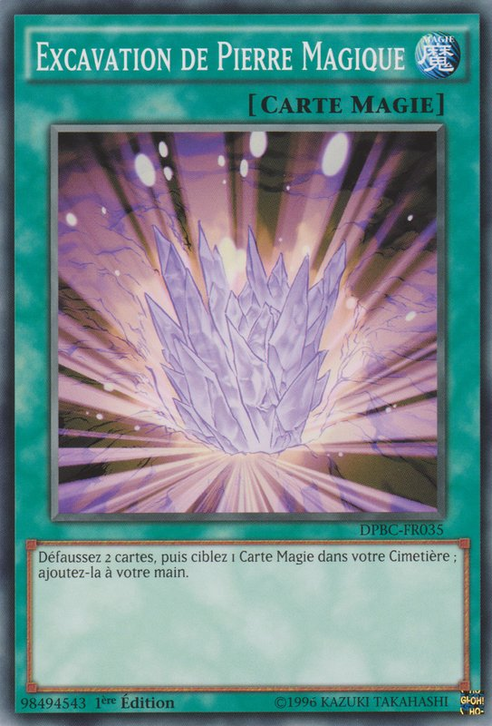 ”
En défaussant de 2 de mes cartes en main, je peux prendre une carte Magie de mon Cimetière et l'ajouter à ma main. Et le choix d'aujourd'hui, c'est la carte magie
d'équipement :
“Antique Gear Mask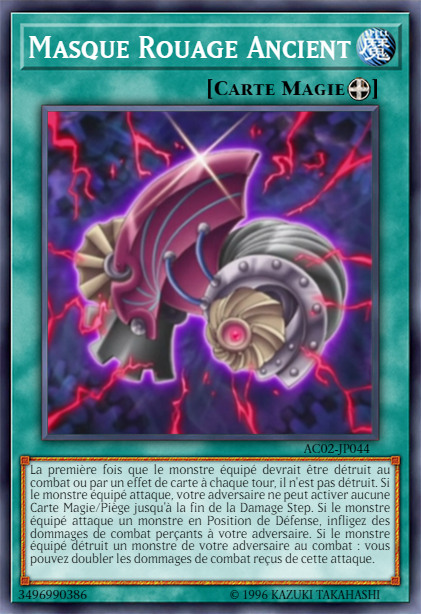 ”
Yuma: Pourquoi se donnerait-il la peine d'envoyer une de ses cartes au Cimetière pour la récupérer juste après ?
Yuma s'est demandé à voix haute. Ruri se demandait la même chose en regardant le duel.
Astral: Il devait avoir une raison de faire cela. Dit Astral. Il eu raison quand Dennis a continué son tour.
Dennis: Ensuite, puisque
“Entermage Trick Clown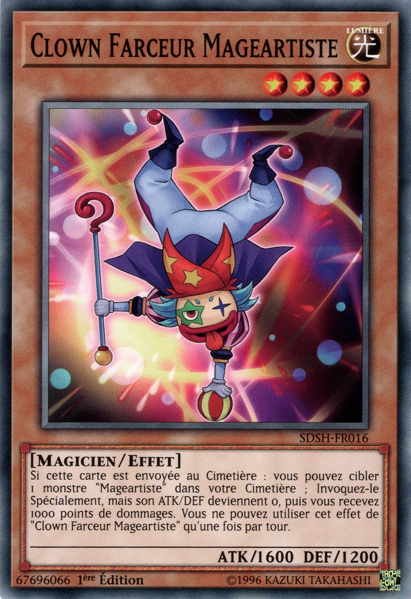 ”
a été envoyé au Cimetière ce tour-ci, je peux faire son Invocation Spéciale avec ses Points d'Attaque et de Défense à 0 !
Ce dernier invoqua un monstre ressemblant à un clown sur son terrain.
Ruri: Maintenant, il a deux monstres de niveau 4 ! C'est ce qu'il avait prévu de faire ! Ruri sursauta, sachant ce qui allait se passer ensuite. Dennis souria.
Un mystérieux magicien à l'allure délicate, vêtu de blanc avec une cape violette, est apparu sur le terrain.
Ruri: C'est le meilleur monstre de Dennis. Il l'a déjà invoqué Ruri s'est exclamée. Yuma grogna en réponse à sa vue.
Dennis: Bien sûr qu'il s'est montré dès le début. C'est un spectacle qui nécessite que la star principale fasse son numéro principal dès le début ! Ensuite, j'équipe
“Entermage Trapeze Magician ”
avec “Antique Gear Mask ”.
Le magicien portait maintenant un masque menaçant, digne du maître qui portait lui-même un masque depuis son arrivée dans la dimension Xyz.
Dennis: Avec ce masque, mon magicien a un tas de nouveaux tours ! Tu verras ce que c'est bien assez tôt, Yuma. Je pose 1 carte face cachée, et je termine mon tour.
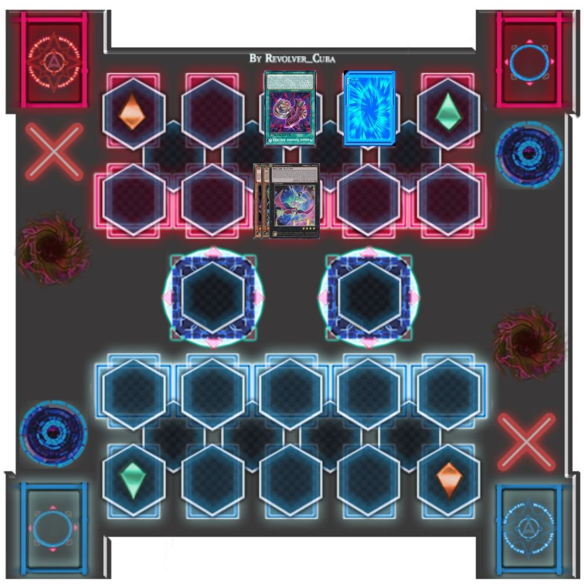
Yuma: J'ai le sentiment qu'aucun de ces "tours" ne sera bon pour moi.
Astral : Ne sois pas intimidé par son côté tape-à-l'oeil, Yuma. Tu as beaucoup de cartes qui peuvent briser ses tours. Tu dois juste tirer une certaine carte pour
terminer le duel en un seul tour. Plus vite tu gagneras, plus vite nous pourrons nous échapper d'ici.
Conseilla Astral.
Yuma: Compris...
Yuma chuchota assez bas pour que Dennis ne puisse pas l'entendre. Juste avant qu'il puisse commencer son tour...
Shun: RURI !
Ruri, Yuma, et Dennis se sont retournés pour voir Yuto et Shun courir dans leur direction.
Ruri: Nii-san ! Yuto !
Ruri s'écria en les serrant tous les deux dans ses bras lorsqu'ils l'ont rejointe.
Ruri: Comment m'avez-vous trouvé ?
Yuto: Sayaka a vu ce qui t'etait arrivé et nous en a informés Répondit Yuto.
Shun: Nous avons alors accouru ici aussi vite que possible. Est-ce que tu vas bien ? Tu n'est pas blessé ?
Shun demanda frénétiquement en examinant sa jeune sœur à la recherche de blessures.
Ruri: Je vais bien Shun... physiquement du moins.
Elle a dit la dernière partie avec tristesse. Shun et Yuto pouvaient voir qu'elle était contrariée par quelque chose. Avant que Yuto ne puisse demander ce qui n'allait
pas, ils ont remarqué le duel qui avait lieu.
Yuto: Hé, tu est ce type, Dennis qui a affronté Ruri en duel. Qu'est-ce que tu...
Shun a alors remarqué le type de Duel Disk qu'il utilisait. Lui et Yuto ont été choqués.
Shun: Ce Duel Disk ! Seuls ces enfoirés d'Academia en ont ! Alors tu es l'un d'entre eux !? Tu as travaillé avec notre ennemi pendant tout ce temps !? C'est toi qui a
essayé de kidnapper ma soeur ?!
Shun a demandé avec colère.
Ruri: Non Nii-san. Ruri, attirait l'attention de son frère aîné.
Ruri: Ce n'était pas Dennis qui me poursuivait avant. Mais il travaillait bien avec le type qui le faisait. Dennis est vraiment un espion d'Academia. Et ce n'est pas tout...
Elle serra ses poings.
Ruri: Dennis est celui qui a donné le signal à Academia de nous attaquer en premier lieu.
Yuto et Shun étaient horrifiés. Ils avaient tous les deux l'air sérieusement énervés, mais l'expression de Shun était la plus terrifiante.
Shun: SALE ENFOIRE !!
Shun était prêt à mettre Dennis en pièces, mais Yuto l'a retenu.
Shun: Bordel ! Yuto ! Lâche-moi ! Shun a lutté pour se libérer, mais la prise de Yuto était plus forte.
Yuto: Crois-moi Shun. Je veux me venger tout autant que toi. Mais pour l'instant, ce n'est pas notre combat.
Il le dit sévèrement alors que les deux regardaient Yuma pour la première fois.
Yuto: Est-tu Yuma Tsukumo ? Celui qui a sauvé Ruri ?
Yuma acquiesca la tête.
Yuma: Oui, c'est moi.
Répondit Yuma. Shun a immédiatement alors fixé son regard sévère sur le jeune garçon, qui tressaillit de peur.
Shun: Ecoute moi très attentivement. Toi et moi nous allons avoir une discussion très sérieuse à propos de ma soeur plus tard. Mais pour l'instant, je veux que tu fasses payer à
ce bâtard tous ses crimes ! Est-ce que je me suis bien fais comprendre, Yuma Tsukumo ?
Yuma a rapidement hoché la tête alors qu'il transpirait à grosses gouttes à cause du regard que lui lançait Shun.
Yuma: Ouais, clair comme de l'eau de roche ! Il va définitivement payer pour tout ce qu'il a fait !
Sur ce, Shun s'est retiré pour se tenir au côté de Ruri et Yuto. Ruri savait à quel point son frère était en colère et ne pouvait pas le blâmer de vouloir battre Dennis
à mort. Elle était contente que Yuto était là pour le garder sous contrôle. Dennis lui-même était beaucoup plus effrayé par le frère de Ruri que Yuma.
Dennis: Oh bon sang ! J'espère que Yuri sera bientôt là. Je n'ai vraiment pas envie d'affronter la colère de ce type.
Mais chaque chose en son temps, il devait d'abord vaincre Yuma et sécuriser Ruri pour l'arrivée de Yuri. Yuma se rappelle alors que c'est son tour et se prépare à
piocher.
Astral: Yuma, oublie Shun pour le moment et concentre-toi pour gagner ce duel.
Yuma: Compris ! Il est temps de rendre un peu de justice ici. C'est mon tour ! Draw !
Un magicien vêtu de bleu foncé et d'orange est apparu sur le terrain de Yuma.
Yuma: Puis j'invoque spécialement
“Kagetokage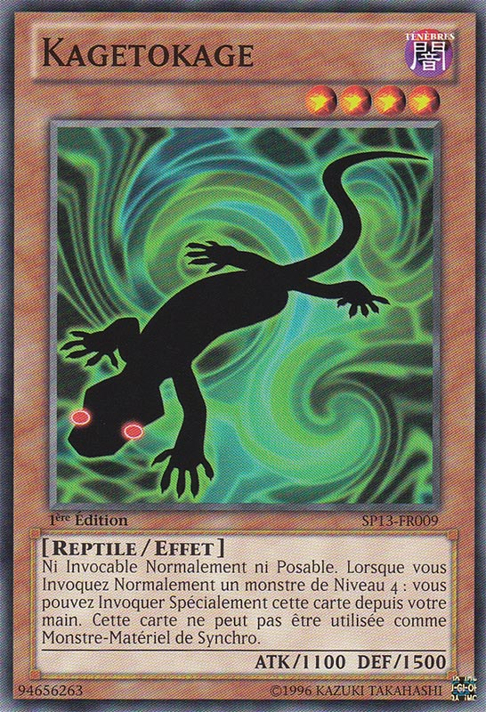 ” !
“Kagetokage ”
ne peut pas être invoqué Normalement. Mais si un monstre de niveau 4 est invoqué, je peux l'invoquer spécialement de ma main.
À côté du magigien se trouvait un lézard noir aux yeux rouges incandescents.
Dennis: Oh ? Alors il compte jouer son meilleur monstre lui aussi ?
Dennis se disait à lui même.
Yuma: Je superpose “Gagaga Magician ”
et “Kagetokage ” de niveaux 4 ! Avec ces
2 monstres, je crée un Réseau Superposé ! Xyz Shokan ! Apparais, Numéro 39 ! Mon combat commence maintenant. Je confie mes souhaits à tes ailes blanches. Le messager
de la lumière,
“Kibo O Hope ” !
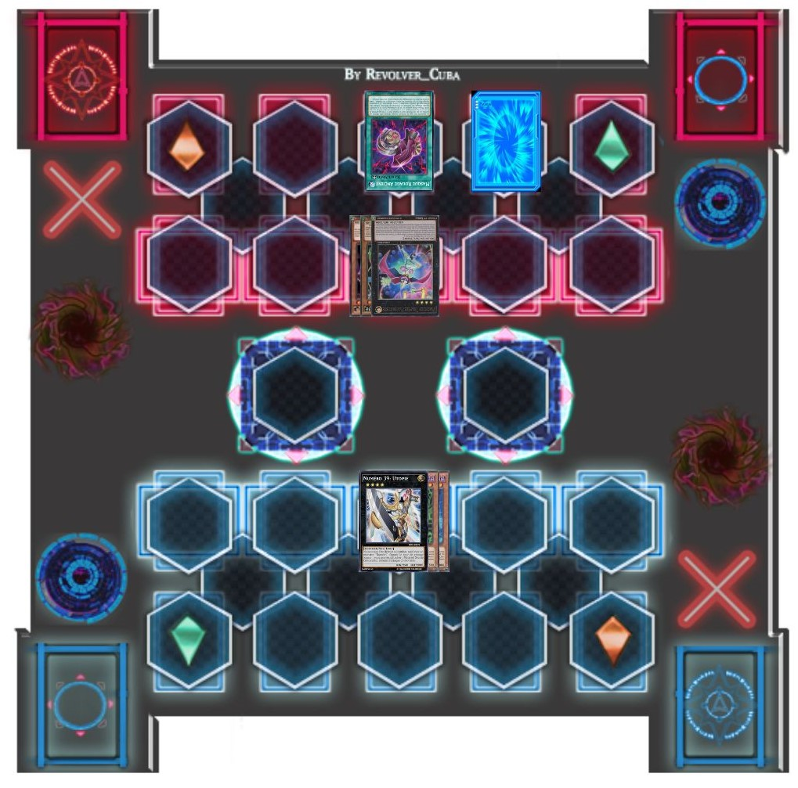
Un puissant guerrier portant une armure blanche et or avec un numéro "39" rouge, affiché sur l'épaule gauche apparut dans un faisceau de lumière, prêt à combattre son ennemi.
Le trio Xyz a été impressionné par le nouveau Monstre que Yuma vient de jouer, n'ayant jamais vu un monstre comme ça de leur vie.
Ruri: Il est magnifique. Murmura Ruri en admiration devant celui-ci.
Yuto: Je suis d'accord. Répondit Yuto
Shun: Voyons si il peut vaincre le monstre de Dennis. Disait Shun
Dennis, cependant, n'était pas inquiet.
Dennis: Wow ! C'est un sacré monstre que tu as là, Yuma ! Mais je suis désolé de te dire que tu ne pourras pas faire grand chose avec lui.
Yuma: Qu'est ce que tu veux dire ?
Dennis: Carte Piège Continu !
“Mado no Toride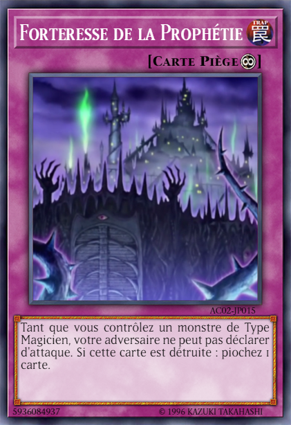 ”
! Comme j'ai un monstre de type Magicien sur mon terrain, mon adversaire ne peut pas déclarer d'attaque. Vraiment désolé.
Dennis l'en informait, stoppant toute chance que Yuma ne puisse l'atteindre.
Dennis: De plus, nos 2 monstres possèdent les mêmes points d'attaque, alors ils se seraient détruient tous les deux... ou, peut-être pas ?
Il le disait, en faisant un clin d'oeil. Yuma et les autres avaient l'impression que Dennis savait quelque chose que eux, il ne savait pas.
Astral: Il doit surement faire référence au masque dont il a équipé son magicien. Il a dit qu'il avait des capacités que nous n'avons pas encore vues. Cependant...
Astral a souri à Yuma.
Astral: C'est quelque chose dont nous n'aurons pas à nous soucier.
Yuma: Je comprends. Yuma a murmuré doucement avant de répondre à Dennis.
Yuma: Dennis, tu penses m'avoir arrêté, mais tu as tout faux ! Je vais briser ta défense et te battre ce tour-ci ! Yuma déclara à son adversaire.
Yuto: Il compte gagner ce Duel dès son premier tour ? Comment ? Yuto a demandé. Lui, Ruri et Shun attendaient avec impatience de voir comment ce garçon allait s'y prendre.
Dennis: Oh ? Alors montre-nous quels tours tu as dans ta manche !
Dennis le disait avec enthousiasme. Yuma sourait.
Yuma: Avec plaisir ! Tout d'abord, j'active une carte que m'a donnée un ami. C'est une carte magie appelée
“Kishi no Shogo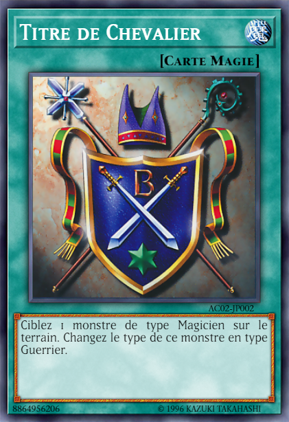 ”
! Cela me permet de transformer un monstre de type magicien sur le terrain en monstre de type guerrier... comme ton monstre ! Et puisque “Entermage Trapeze Magician ”
n'est plus un monstre de type Magicien, ton Piège ne peut plus arrêter mes attaques !
Déclara Yuma, et surprenant tout le monde.
Dennis: Tch... Dennis a grogné d'agacement.
Dennis: Je ne l'avais pas vu venir celle-là.
Ruri: Mais c'est inutile. Même si Yuma peut de nouveau attaquer, les deux monstres ont toujours la même puissance d'attaque. Ils vont juste se détruire mutuellement.
Ruri l'a fait remarquer.
Yuto: Je pense que Yuma va s'en occuper, d'une manière ou d'une autre.
Yuma: Ensuite, j'équipe
“Hope ”
avec la carte magie d'équipement: “Ultimate Hope Ken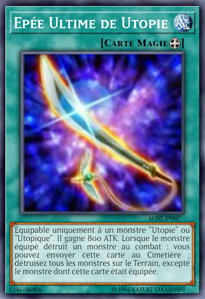 ”
! Cela augmente les points d'ATK de “Hope ”
de 800.
Dennis: Qu'est ce que tu dis ?
Dennis a crié son incrédulité en voyant les points d'attaque de “Hope ” dépasser ceux de son monstre.
Dennis: Bon sang. Bon, au moins, je vais juste me prendre quelques dégâts, mais je ne vais perdre ni mon Monstre à cause de l'effet de mon Masque et ni ce Duel non plus.
C'est ce que pensait Dennis, alors que le combat allait avoir lieu. Les 3 autres pensaient aussi la même chose, jusqu'à ce que...
Yuma: J'active l'effet de monstre de “Hope ”
. Quand un monstre lance une attaque, en détachant une unité superposée, je peux annuler cette attaque. Moon Barrier !
Tout le monde, ici présent (excepté Yuma et Astral) ont été choquée en voyant Hope arrêté sa lame à un centimètre prêt de de la tête de Trapeze Magician.
Shun: Mais qu'est-ce que fait Yuma ? Pourquoi a-t-il arrêté son attaque !? Il aurait pu détruire le Monstre de Dennis sans se soucier d'une contre-attaque.
Shun le disait avec incrédulité, ne connaissant pas les effets de protection de
“Antique Gear Mask ”.
Yuto et Ruri, eux aussi n'ont pas compris non plus le geste de Yuma et ont continué à observer.
Dennis: C'est quoi le problème, Yuma ? Je croyais que tu avais prévu de me battre durant ce tour ?
Dennis a déclaré d'un air moqueur. Yuma, quand à lui, souria avec confiance.
Yuma: Oh, je compte bien le faire. Et voici la meilleur partie ! J'active une Magie de jeu-rapide,
“Double Up Chance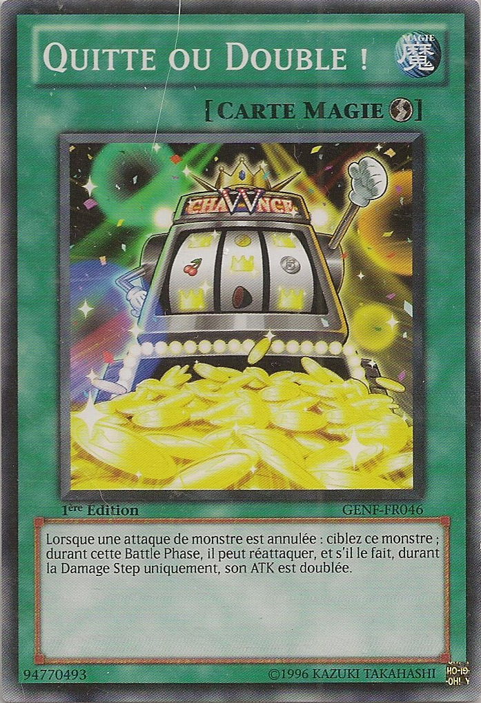 ”
! Lorsque l'attaque d'un monstre a été annulé, je peux faire en sorte que ce même monstre attaque à nouveau... avec ses points d'attaques doublés !
Dennis: Dou...Doublée !!? Pour la 1ère fois, Dennis paniqua, alors que celui-ci vit la puissance d'attaque déjà élevée de Hope augmenter encore plus.
(Kibo O Hope: 3300 x 2 = 6600 ATK)
Peu importe maintenant que son Monstre ne puisse être détruit ce tour-ci, les dégâts de l'attaque qu'il recevra l'achèvera à coup sûr.
Ruri: Une puissance d'attaque de 6600 points ! Cela signifie que si l'attaque de Yuma réussit... Ruri commença sa phrase.
Yuto: Dennis subira 4100 points de dégâts, assez pour le battre en un seul coup ! Yuto finisait la phrase.
Shun: En fin de compte, Yuma savait vraiment ce qu'il devait faire.
Shun le disait doucement. Celui-ci commençait à admirer les compétences en duel de Yuma.
Yuma: Très bien. Dennis ! Ceci est pour tous les gens de Heartland que tu as blessés !
“Kibo O Hope ”
attaque “Entermage Trapeze Magician ”
! ULTIMATE HOPE KEN SLASH !
Dennis ne pouvait que rester debout et regarder son Monstre se faire trancher. L'impact envoya Dennis voler contre le mur de la Tour et il glissa sur le sol en
signe de défaite.
Dennis: AAAARRRRGGGGHHHH !!!!
Dennis: 4000 LP - 4100 LP = 0 LP
Ruri: Yuma a réussi ! Il l'a fait ! Acclama Ruri.
Yuto: Il est fort. Surement aussi fort que n'importe quel membre de la Résistance. Pensa Yuto silencieusement.
Shun n'a pas dit un mot, mais il est passé devant Yuma et a attrapé Dennis par le col. Le regard qu'il lui a lancé a donner à Dennis l'envie d'être ailleurs à
ce moment-là, et loin de ce type.
Shun: Répond-moi, espion de la Dimension Fusion. Que veut faire Academia de Ruri ? Pourquoi ma soeur est t-elle si spéciale pour votre Professeur
au point qu'elle ne peut pas se permettre d'être scellée dans une carte ?
Dennis lutta pour se libérer, mais il était pris au piège par la poigne de Shun.
Dennis: Je n'en sais rien.
L'emprise de Shun s'est resserée, rendant la respiration de Dennis plus difficile.
Shun: Menteur ! Dis-le moi tout de suite, ou je te scelle moi-même dans une carte ! Shun le menaca, choquant Ruri, Yuto, Yuma et Astral. Dennis commenca à paniqué et à s'étouffer.
Dennis: Je te jure, je n'en sais vraiment rien ! On m'a ordonné de trouver une fille ici avec un bracelet correspondant à celui que porte ta sœur. Après ça,
j'ai dit à Yuri de l'emmener chez le Professeur. Et c'est tout ! Le Professeur n'a jamais expliqué pourquoi nous devions la chercher en premier lieu !
C'est tout ce que je sais !
Après un moment, Shun a finalement relâché son emprise sur Dennis... avant de lui asséner un coup de poing au visage assez fort pour l'assommer.
Astral: Shun Kurosaki est une personne assez intense. Disait Astral avec intérêt.
Yuma: Tu peux le dire. Répondit Yuma, toujours intimidé par Shun.
Après cela, Ruri et Yuto finissaient par approcher Shun.
Ruri: Nii-san, tu n'allais vraiment pas le sceller dans une carte, même si il ne montrait aucun signe de coopération ? N'est-ce pas ?
Ruri a demandé, craignant les actions de son frère.
Shun: Il a avoué qu'il ne savait vraiment rien. Dans ce cas, ce n'était pas nécessaire de le faire. Ce dernier répondit. Mais cette réponse ne plaisait pas à Ruri.
Ruri: Ce n'est pas ce que j'ai demandé ! Ce que tu as menacé de le faire était mal, et tu le sais Shun ! Si tu était aller jusqu'au bout,
tu n'aurais pas été différent des gens qui ont détruit nos vies !
Ruri le sermonna. Shun a soupiré.
La vérité est qu'il avait vraiment l'intention de sceller Dennis, qu'importe si il connaissait les plans d'Academia concernant sa soeur, ou pas. La seule raison pour
laquelle il ne l'a pas fait, était qu'il ne voulait pas que Ruri soit témoin de cet acte horrible de la part de son propre frère. De plus, Yuto aurait certainement
intervenu, rendant la situation encore plus compliquée.
Shun: Tu as raison. Je suis désolé, Ruri. Ça ne se reproduira plus.
Cela semblait rassurer sa soeur qu'il puisse se montrer de nouveau raisonnable. Maintenant que cette affaire est réglée, Shun concentra tout son attention sur le
"sauveur" de sa soeur. Une fois de plus, il fixa Yuma avec ces yeux féroces.
Shun: Maintenant, il est temps pour nous de discuter, Yuma.
Shun a commencé à parler, faisant transpirer Yuma de nouveau, et le faisant déglutir.
Shun: Sayaka nous a dit que tu prévoyais d'emmener Ruri loin de sa maison et de tous ses camarades... y compris de moi. Est-ce vrai ?
Malgré la peur qu'inspirait Shun, Yuma ne se détourna pas du regard de Shun et il répondit.
Yuma: Oui, tu as raison. Je comptais l'emmener dans un endroit où Academia ne la trouvera jamais. C'est pour sa propre sécurité.
Shun: Et en quoi cela te rendrait-il différent de ceux venant d'Academia ? Pourquoi est-ce que je devrais te croire ? Tu pourrais tout aussi bien être un autre espion
venu de je ne sais où, après tout ce qui vient de se passer à l'instant.
Yuma: Je ne suis pas un espion ! Ce que le Professeur prévoit de faire à Ruri est horrible ! C'est pour ça que je suis venu la sauver de lui !
La réponse de Yuma fit écarquiller les yeux de Shun et Yuto.
Yuto: Tu sais pourquoi le professeur veut Ruri ? Demanda Yuto. Yuma lui fit un signe de tête.
Shun: Alors dis-nous ! Pourquoi est-ce qu'il la veut tant ?
Shun a insisté. Mais Yuma n'eu pas le temps de répondre à cette question.
Yuri: Ça n'a pas d'importance à présent, n'est-ce pas ? Après tout, vous allez tous être transformés en cartes. Exceptée Ruri, bien entendu.
Une voix froide et menacante se faisait entendre à l'instant.
Tout le monde s'est retouner derrière pour voir, nul autre que le poursuivant de Ruri, Yuri. Sa cape avait disparu, et tout le monde pouvait voir son visage,
ce qui a choqué tout le monde sauf Yuma.
Shun: C'est quoi ce bordel ? Shun s'est exclamé, ne croyant pas ce qu'il voyait.
Ruri: Son visage ! C'est le même... Ruri a commencé.
Yuto: Que le mien ! Yuto a terminé. Tous deux étaient presque sans voix.
Yuri: Allez, finit avec cette ridicule course poursuite. Tu vas venir avec moi Ruri. Yuri ordonna en s'approchant d'eux.
Ruri: Cette voix... Je la reconnais ! C'est celui qui a essayé de me capturer avant ! Ruri leur révéla.
Yuma: Oui. C'est bien lui. Yuri ! Yuma répondit, non content fait qu'il les avait rattrapés. Il s'est ensuite tourné vers Ruri et Yuto.
Yuma: Ruri, Yuto, vous devez tous les deux venir avec moi maintenant ! C'est notre seule chance ! Le trio a été surpris une fois de plus.
Shun: Quoi ? S'exclamma Shun, ne croyant pas ce qu'il entendait.
Ruri: Tu veux que Yuto vienne aussi ? Ruri demanda à Yuma.
Yuto: Je pensais que seule Ruri devait venir avec toi ?
Yuma: Je n'ai jamais vraiment dit que c'était juste Ruri. Désolé de ne pas l'avoir mentionné avant. J'étais juste concentré sur Ruri à ce moment-là.
Yuto, tu dois venir aussi. C'est important que toi et Ruri puisse restiez ensemble ! Si vous voulez vous protéger l'un l'autre, alors vous devez venir avec moi au sommet de la Tour d'Heartland maintenant !
Cria Yuma.
Yuto et Ruri se regardent fixement, sans savoir quoi faire. Puis une autre voix les a fait sortir de leurs pensées.
Shun: Partez avec Yuma !
Shun ordonna, se tenant maintenant entre Yuri et ses camarades. Yuto et Ruri l'ont regardé fixement.
Ruri: Nii-san ?
Ruri regarda son frère. Sans se retourner pour regarder derrière lui, Shun conversa avec Yuma.
Shun: Si Yuto y va aussi, alors je sais que Ruri ira bien. Je lui fais confiance concernant sa sécurité. Puis-je te faire confiance pour faire la même chose, Yuma Tsukumo ? Shun demanda à Yuma.
Yuma: Absolument. De plus, je ne serai pas seul. J'ai aussi des amis qui peuvent m'aider à veillez sur eux.
Yuma lui répondit, essayant de rassurer le duelliste endurci. Cela semble l'avoir convaincu.
Shun: Dans ce cas, vas-y. Je vais te faire gagner du temps.
Il a dit en activant son disque de duel, avec l'intention de se battre en duel contre Yuri.
Ruri: Nii-san...
Ruri parlait, se sentant triste que ce soit la dernière fois qu'elle puisse le voir comme ça.
Shun: Ne t'inquiète pas pour moi, Ruri. Tant que tu es saine et sauve, cela suffit amplement pour moi. Promets-moi que toi et Yuto vous ne vous quitterez pas, et ce, quoi qu'il arrive.
Shun le disait. Ruri et Yuto se sont regardés et se sont tenus la main.
Yuto et Ruri: On te le promets. Les deux ont répondus avec force.
Yuri: Comme c'est touchant. Mais je me dois d'insister pour que vous me la remetiez.
Yuri les menaça, alors qu'il avait aussi activé son disque de duel.
Shun: Tu devras d'abord me passer sur le corps, enfoiré de Fusion ! Ruri, Yuto, partez maintenant ! Ordonna Shun.
Yuma: Vous l'avez entendu, on y va !
Sur ce, Yuma, Ruri et Yuto coururent enfin à l'intérieur de la Tour d'Heartland. En haut de la structure détruite, ils ont couru dans les escaliers rapidement.
C'était un peu difficile à cause de tous les dégâts causés par l'Invasion. Mais enfin, ils sont arrivés au sommet.
Yuto: Et maintenant ?
Ruri: Yuma a dit qu'il allait envoyer un signal à une sorte de dirigeable pour qu'il puisse venir nous chercher.
Yuma: En effet.
Yuma a dit en regardant Astral, qui a hoché la tête avant de retourner à l'intérieur de la
Cle de l'Empereur.
Après cela, Yuma a levé la Clé en l'air. Ce faisant, un rayon de lumière dorée a jailli vers le haut.
Yuto: Qu'est-ce que c'était ? C'est le signal ? Demanda Yuto.
Yuma: Ouais. Et maintenant, je vous conseilles de vous accrocher à quelque chose. Conseilla Yuma.
Le couple Xyz s'agrippa à de solides rampes métalliques. C'est alors qu'une explosion s'était produite au-dessus des nuages, ce qui avait fait un peu trembler la tour.
Heureusement, rien ne s'est écroulé. Et puis, les nuages se sont séparés pour révéler un spectacle impressionnant.
Un aéronef massif, de forme cylindrique, est descendu du ciel. Il s'est positionné juste au-dessus de la tour Heartland, attendant ses passagers.
Yuto: C'est CA le dirigeable ! Il est énorme ! Yuto s'exclama, stupéfait.
Ruri: J'ai entendu dire qu'il était énorme, mais je ne m'attendais pas à ce que ce soit SI énorme que ça !
Ruri était en accord avec Yuto. Juste à ce moment, une lumière verte est apparue sous le dirigeable et a entouré Yuma, Ruri et Yuto.
Depuis le sol, Shun et Yuri étaient également stupéfaits par ce dernier événement.
Shun: Mais qu'est-ce que c'est que cette chose !? Questionna Shun, étant choqué par la vue du vaisseau.
Yuri: Je ne sais pas, mais ça ressemble à une sorte d'aéronef. Je suppose que je dois finir ce duel rapidement.
Shun: Essaye pour voir ! Shun le provoqua. Tous les 2 reprirent leurs duels.
Ruri: Qu'est-ce que c'est ? Ruri a demandé, curieux qu'un halo de lumière vert les entourait.
Yuma: C'est comme cela que nous allons monter à bord. Nous sommes prêts, Astral ! Téléporte-nous !
Yuto et Ruri: Qui est Astral ?
Ruri et Yuto ont tous deux posé la question. Yuma leur souria.
Yuma: Vous allez voir.
Il a dit alors que la lumière autour d'eux est devenue rouge juste avant de les prendre. Avec leurs occupants sains et saufs à bord, le dirigeable de Dimension Différente s'est élevé à nouveau et dans un flash de lumière... a disparu de la vue.
Il a dit alors que la lumière autour d'eux est devenue rouge juste avant de les prendre. Avec leurs occupants sains et saufs à bord, le Vaisseau Different Dimension
(Ijigen Hikōsen) s'est élevé à nouveau et dans un flash de lumière... a disparu de la vue de toutes les personnes présentes.
 était fatiguée de courir. Cela faisait presque une heure qu'elle était en fuite, essayant d'échapper à l'étranger masqué qui la poursuivait. Elle s'occupait de ses
affaires, aidant la Résistance, quand soudain un froid glacial lui parcourut l'échine. Ruri s'est instinctivement retournée pour voir une silhouette déguisée. Bien
qu'elle ne pouvait pas voir son visage, elle pouvait voir son sourire... un sourire froid et sadique qui lui disait de s'éloigner de lui.
était fatiguée de courir. Cela faisait presque une heure qu'elle était en fuite, essayant d'échapper à l'étranger masqué qui la poursuivait. Elle s'occupait de ses
affaires, aidant la Résistance, quand soudain un froid glacial lui parcourut l'échine. Ruri s'est instinctivement retournée pour voir une silhouette déguisée. Bien
qu'elle ne pouvait pas voir son visage, elle pouvait voir son sourire... un sourire froid et sadique qui lui disait de s'éloigner de lui.

.png)